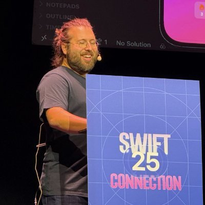
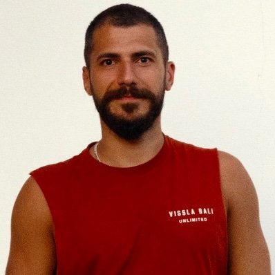
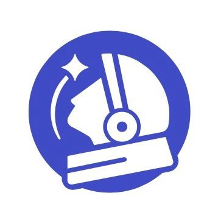

DESIGN × DEV · 70 PROFILES
70 位把代码写出审美的开发者
独立开发者、设计工程师、开源作者、写作者。每一页都整理了一个人：他做过什么，他的个人网站长什么样，他是怎么一步步走到今天的，以及我们能从他身上学到什么。
种子 · 用户提供 20
开源作者 · 开发者工具与 AI 桌面应用 — openai-translator、avante.nvim、magpie 的作者，专做「不打断工作流」的 AI 工具。
Android 独立开发者 · Catching Now — 冰箱、通知滤盒、剪纸堆作者；新作 AndroMeld 把 Android 搬到 Mac 上。
产品工程师 · 开源作者 · 写作者 — Pake、Mole、妙言的作者，《潮流周刊》主理人，长假造物的杭州产品工程师。
前 React 核心成员 · Midjourney 工程师 — react-motion、ReasonML、Pretext 作者，现于 Midjourney；对抽象与动画有极高品味。

React Compiler 核心成员 · xAI 工程师 — React Compiler 核心成员，hiring-without-whiteboards 发起人，前 Netflix / Meta / Cursor。
技术文青 · 前腾讯 / 微软工程师 — 前腾讯 / 微软工程师，博客横跨 ML 系统、海外产品开发、商业与旅行。
开源贡献者 · Python 开发者 · 跑者 — running_page、bilingual_book_maker、xiaogpt 作者；一年 500 个 PR 的开源贡献者。
Apache PMC · 数据库查询引擎工程师 · AI Builder — Apache Arrow / DataFusion / Doris PMC，OpenCLI 作者，在做 Raft 与 Maka。

全栈开发者 · Felinic 创始成员 — Memoh 多 Agent 平台与 ChatTutor 的核心开发者，交通迷、舞萌玩家、养了三只猫。
独立研究者 · 交互式 Agent 系统 — 华为首批天才少年，《深入理解 AI Agent》作者，独立研究交互式 Agent 系统。
NVIDIA 芯片架构师 · 开源开发者 — shadowsocks-android 作者，NVIDIA 芯片架构师；2026 年用 AI 把《仙剑》移植成 Rust。
独立开发者 · Mac / iOS 应用作者 — Ubuntu Tweak、Manico、PasteNow、PopTranslate 作者，杭州良渚的资深独立开发者。
安全研究员 · 程序分析 · AI Infra — FuzzLand 联合创始人、ItyFuzz 作者、漏洞赏金 190 万美元；Claude Code 源码泄露的发现者。
创业者 · Multica 创始人 — Multica 创始人，前 Devv AI、前 TikTok US；X 上最活跃的中文 AI 创业者之一。
AI 艺术家 · 实验电影导演 · 摇摆舞者 — AI 艺术家与实验电影导演，擅长 AI 转绘、LoRA 训练与 ComfyUI 工作流。

大厂高工 · 副业独立开发 · 出海模板作者 — MkSaaS、TanStarter、Mkdirs 模板作者，大厂高工副业出海，两年收入破 10 万美元。

独立开发者 · 设计师 · 日语学习 App 作者 — PNChart 作者；Oyomi、Kana Origin、Miraa 等日语学习 App 的开发者，现居日本埼玉。

CapWords 团队 · Apple 设计大奖得主 — CapWords 团队，2025 Apple 设计大奖「趣味与愉悦」得主、App Store 年度 App。
UI 设计师 · 博主 · 收集者 — UI 设计师，Design Scenes 博客与 Design Fragments 收集站作者，Figma 插件与 iOS 新手开发者。
设计师 · AirBuild 创始人 — AirBuild 创始人，AFFiNE、Bridge 早期成员；Viber、LookInside、Hands Time 等作品的设计者。
第一批 25
独立开发者 · 以卖 App 为生 — 熊猫吃短信、ServerCat、OpenCat 作者，边全球旅居边做产品的独立开发者。
越南独立开发者 · TypingMind 作者 — TypingMind、DevUtils、Xnapper、Black Magic 作者，《My Indie Book》作者。
全职开源者 · Mac App 匠人 — Awesome 列表创始人、上千个 npm 包维护者，61 款 Apple 平台小工具的作者。
iOS 独立开发者 · Apollo / Pixel Pals 作者 — Apollo for Reddit、Pixel Pals、Juno 作者；用 Vision Pro 设计自己的房子。
Mac / iOS 开发者 · 安全研究员 — AirBuddy、VirtualBuddy、非官方 WWDC App 作者，逆向工程与苹果安全研究专家。
Mac 客户端工程师 · 博主 — 前字节 / 阿里，现做 Mac 客户端；博客 cy4n.dev 横跨 Swift、Rust、React 与图形。

OpenAI Codex 开发者体验 · SwiftUI 开源作者 — Ice Cubes、MovieSwiftUI 作者，前 Medium iOS 负责人，现在 OpenAI 做 Codex 开发者体验。
Apple 平台开发者 · 逆向与工具作者 — vphone-cli、Asspp、NotchDrop、FlowDown、Rayon 作者，高产的 Apple 平台黑客。
澳大利亚独立 App 开发者 · YouTuber — 墨尔本的独立 App 开发者，App 组合策略代表人物，Swipe the Cat 作者，YouTube 创作者。
LINE 工程师 · Kingfisher 作者 · 技术作家 — Kingfisher、VVDocumenter、FengNiao 作者，《Swifter》等书作者，objc 中国主理人，现居日本。
iOS 独立开发者 · 作家 · Superwall 开发者关系 — Swiftjective-C 博主，Spend Stack（已被收购）、Elite Hoops、Alyx 作者，Superwall DevRel。
iOS / macOS 开发者 · 教育者 — 前 GoPro / Apple / Microsoft，iOS 教育者，Super Easy Timer 作者，公开分享 AI Agent 开发 App。
开发者 · 沉浸式翻译联合创作者 · 数字花园园丁 — 沉浸式翻译创作者之一（2022–2025），Actionsflow、Buzzing、Jant 作者，住在上海。

Swift 开发者 · Swift with Majid 博主 — Swift with Majid 博主、SwiftUI Weekly 编辑，CardioBot、NapBot 作者，现居阿塞拜疆巴库。
设计工程师 · FlowFerry / Detail 作者 — 设计工程师，前字节（飞书 / TikTok Shop）与 LobeHub；FlowFerry、Detail、Mono Card 作者。
独立创业者 · Nomads.com / Photo AI 作者 — Nomads.com、Remote OK、Photo AI 作者，《MAKE》作者，全球最知名的独立创业者。

flomo / 小报童 / 幕布联合创始人 — flomo、小报童、幕布联合创始人，《笔记的方法》作者，产品沉思录主理人。
前端 / 基础设施工程师 · Hexo 核心成员 — Hexo 核心成员、nolyfill 与 foxact 作者，前 ArcBox Labs 联合创始人，现于 Manus 做基础设施。

AI 出海创业者 · 超级个体 · PaywallPro 作者 — UI 设计师出身的出海创业者，20+ App、500 万用户，PaywallPro 作者，X 上的「鱼总聊 AI」。

法国独立创业者 · ShipFast / DataFast / TrustMRR 作者 — ShipFast、DataFast、TrustMRR 作者，38 个创业项目，月收入约 9 万美元，现居塞浦路斯。

HeadshotPro 创始人 · AI 产品创业者 — HeadshotPro 创始人，Headlime（被 Jasper 收购）与 Landingfolio 作者，AI 产品先行者。
Hacking with Swift 创始人 · 作家 · 讲师 — Hacking with Swift 创始人，100 Days of SwiftUI、Unwrap、Ignite、Kickstart 作者，英国巴斯。
App 开发者 · Yep 主力开发者 — Yep 主力开发者，MonkeyKing、Proposer、KeyboardMan 作者，Ducky 与 Anycode 开发者。
软件工程师 · 业余独立开发者 — 工程师 + 业余独立开发者，X-TOC、Bookmark Assistant、DashBye 作者，写作克制而真诚。

大厂 AI 工程师 · 独立创造者 — 大厂 AI 工程师，腕记 WristMemo 作者，个人站 kelvinmade 设计感十足。
第二批 25

荷兰独立开发者 · Good Snooze · MacWhisper 作者 — MacWhisper、Navi 作者，Good Snooze 独立开发者；Swift Charts / TipKit / visionOS 示例项目作者。

iOS / macOS 开发者 · 前 Web 设计师 — LTMorphingLabel、VPNOn 作者，前土豆 / 携程 / 米哈游，SubList、SwiftyMenu 等 8 款 App 开发者。
Product Engineer · 写作者 · 独立开发者 — Cusdis、WebShell、ccmate 作者，前阿里 / 蚂蚁 / 虎牙 / 微软，Notepal、EpubKit 等产品的独立开发者。
Anthropic 设计师 · 前 The Browser Company — Flashlight 作者，Arc 浏览器的设计灵魂之一，现于 Anthropic 做设计；网站是个点击游戏。
前工业设计师 · Swift 与编译器爱好者 — 前工业设计师、前字节基础设施工程师，Swift / 编译器爱好者，研究 AI Agent 与模型可解释性。

Netflix iOS UI 工程师 · 交互与动画专家 — Motion 动画引擎作者，越狱时代的交互黑客，Swift 合成器讲者，Netflix iOS UI 工程师。

The Iconfactory 合伙人 · Twitterrific 作者 — Twitterrific 作者、The Iconfactory 合伙人，Mac 与 iOS 开发的元老级人物，博客 furbo.org。

设计师 · 流利说第 7 号员工 · 一人公司 — 流利说第 7 号员工与首位设计师，现居达拉斯，用 AI 做 RXlingo、VibeCap 等产品。
设计工程师 · LobeHub · Mix Space 作者 — Shiro / Mix Space / Afilmory / 余白 Yohaku 作者，前阿里，现于 LobeHub；数字游民、设计工程师。
Draw Things 作者 · libccv / libnnc 维护者 — libccv / libnnc 作者，前 Snapchat iOS、Facebook Videos 创始成员，Draw Things 开发者。
Diagrams for Mac 作者 · Swift 自由开发者 — Diagrams for Mac 作者，Structured Path GmbH 创始人，捷克人、现居德累斯顿。
macOS 开发者 · Amphetamine 作者 — Amphetamine 作者，与 App Store 审核正面交锋并胜出的 macOS 开发者。
Sup Space 创始人 · 音乐类 App 独立开发者 — Sup Space 创始人，Music Mate、Artwall 作者，前扇贝网 / 英语流利说 iOS 工程师。

OpenClaw 作者 · PSPDFKit 创始人 · OpenAI — PSPDFKit 创始人，OpenClaw 作者（GitHub 星数最多的软件项目），2026 年加入 OpenAI。
Vercel 交互设计师 · Devouring Details 作者 — Vercel 交互设计师，Devouring Details 与 History of Software Design 作者，interfaces 清单发起人。
Swift / SwiftUI 技术博主 · 周报主理人 — 「肘子的 Swift 记事本」博主，Fatbobman's Swift Weekly 主理人，SwiftUI / Core Data 专家，大连。
iOS 工程师 · Swift Evolution 译者 · 少数派作者 — Swift Evolution 并发提案译者，博客「Hackable life?」作者，少数派作者，深圳。
AI 原生独立开发者 · 前华为 IDE 工程师 — 前华为 IDE / 鸿蒙开发工具工程师，2026 年起独立开发 Pace、Voily、Pi Index、SubWorth。
AeroSpace 作者 · 前 JetBrains / Kotlin 工程师 — AeroSpace（i3 风格 macOS 平铺窗口管理器，★2.3 万）作者，前 Kotlin / JetBrains，阿姆斯特丹。
Apple 平台独立开发者 · 前 Apple 软件工程师 — 前 Apple 工程师（5 年），Zenitizer 冥想与 Daylish 时间线 App 作者，德国。
一人公司 · 独立开发者 · AI × 数据 — 前大厂高级数据架构专家，一人公司经营者，拾穗数据与 IndieMaker 社群主理人，杭州。
独立 Mac + AI 开发者 · Veil 作者 — Veil（Mac 屏幕共享隐私工具）作者，分享 Cursor / Agent 实战发布笔记的独立开发者。
App 开发者 · Pixegen 工作室 — Pixegen 工作室开发者，uRSS、PixelLoupe（开源 RAW 编辑器）、BrowserSwap、Ultravault 作者。
GenAI 工程师 · 小巧 Mac 工具作者 — 印度苏拉特的 GenAI 工程师，NotchMind 与 TapNoise 两款精致 Mac 小工具的作者。
iOS 独立开发者 · Manga Capsule 作者 — Manga Capsule（本地漫画阅读器，5 万+ 用户）与 translateOff（离线 AI 翻译）作者。
关于这个项目
名单来自一个持续维护的研究池 x-design-devs.md：先由种子账号出发，再按「设计感 × 工程能力」分三批扩展，并给出 3–5 分的主观评分。
每篇人物志都基于公开资料整理：X 个人资料、GitHub、个人网站与博客、播客与采访等，并在页尾列出来源。视觉风格参考了 AirBuild 的博客排版。